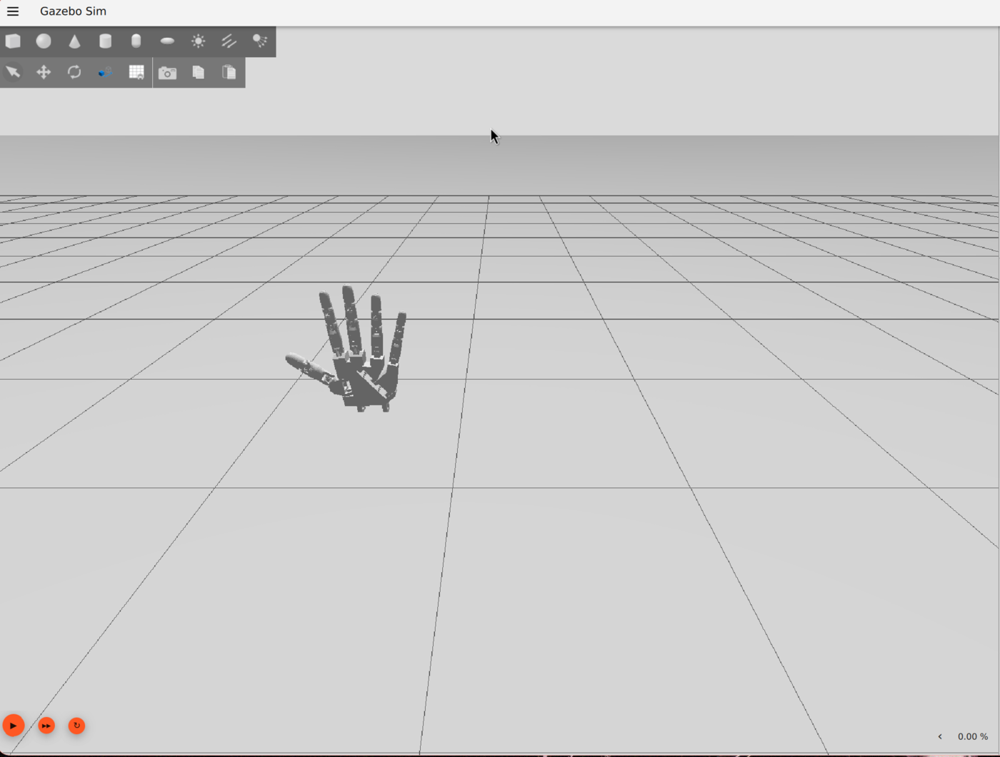

Simulation (Gazebo)¶
The simulation lets the vision pipeline drive a physically accurate 3D hand model before the real hardware exists, useful for testing tracking, tuning, and the control pipeline without waiting on a 3D printer or wiring.
Stack: Gazebo Sim (Harmonic) + ROS2 Jazzy, run in Docker.
The vision pipeline's HUD (top left) driving the simulated hand in real time:
hand_tracker.py --no-serial --gazebo.

Setup¶
cd sim/docker
docker build -t robotics-gazebo .
./run.sh
run.sh mounts the whole sim/ directory to /sim in the container (not just worlds/, since
mesh files live under sim/models/), sets GZ_SIM_RESOURCE_PATH=/sim/models, and names the
container robotics_gazebo_sim, a stable name that other tooling (like the vision bridge) targets
with docker exec.
World files¶
sim/worlds/box_world.sdf: a minimal learning rig (pendulum, hinge, box) for getting a feel for Gazebo joints and physics before touching the hand model. Uses thedartsimphysics engine.sim/worlds/hand_world.sdf+sim/models/hand/{left,right}/: the actual hand model — both hands, fixed in space via a world-mount joint so fingers/wrist can be exercised directly throughJointPositionControllertopics without an arm or gravity-compensation setup. Usesbullet-featherstone, notdartsim. See why below.- The world also stages a
workbench(table) andbackdrop_wallaround the hands, plus asunkey light and two dimfill_light_*point lights, so it renders as a small workshop scene rather than two hands floating in a void. See Environment staging below. sim/worlds/gui/{left_hand,right_hand}.config:--gui-configcamera presets, picked at launch time (stockgz-simhas no in-session preset switcher):Launching withoutgz sim -g sim/worlds/gui/left_hand.config sim/worlds/hand_world.sdf-guses the world's own overview camera instead.
The hand model's provenance¶
2nd generation: MyRobotLab/inmoov_ros meshes, both hands¶
sim/models/hand/{left,right}/hand.urdf are generated, not hand-authored — by
sim/models/hand/generate_hand.py,
checked into the repo. It builds each side's URDF from mesh + joint-origin data transcribed out of
MyRobotLab/inmoov_ros's inmoov_description /
inmoov_meshes packages (CC-licensed — LICENSE.txt is copied into each side's directory).
This replaced a 1st-generation model extracted from Sentience-Robotics/inmoov_ros_sim's whole-body sim rig, which had rougher meshes (that repo optimized for physics/joint structure, not visual quality) and only covered the left hand.
Full regeneration pipeline (needs gz on PATH — run inside the robotics-gazebo container):
python3 generate_hand.py # writes {left,right}/hand.urdf
gz sdf -p left/hand.urdf > left/hand.sdf # and the same for right/
gz sdf -p right/hand.urdf > right/hand.sdf
python3 build_world.py # assembles sim/worlds/hand_world.sdf
build_world.py fixes up mesh URIs (relative-to-itself in hand.sdf, but relative-to-worlds/
once embedded in hand_world.sdf) and re-adds visual material, since gz sdf -p silently drops a
URDF's <material><color/></material> during conversion.
Regenerating the world overwrites hand-tuned staging
build_world.py is a from-scratch template — it does not know about the workbench,
backdrop, lighting, or the PID gains described below. Running it will silently revert all of
that back to defaults. If you need to touch a joint's geometry, prefer a targeted edit of the
generated hand.sdf/hand.urdf plus a surgical patch to hand_world.sdf, or be ready to
reapply the staging/tuning by hand afterward.
Why transcribed by hand instead of run through the real xacro toolchain: the source repo's
asmHand.urdf.xacro macro is parameterized by side/flip exactly the way this project needs
(mirrors correctly, no manual mirroring math), but its joint-limit properties resolve through
$(find inmoov_bringup)/config/config.yaml via real ROS package-path resolution — not worth
standing up a colcon workspace for a one-time generation step. generate_hand.py resolves the
same macro logic (side/flip substitution) directly in Python instead.
A few values intentionally do not carry over from the source repo:
- Joint limits/velocity keep this project's existing
0..1.5708rad /0.7854rad/s convention (matchingsim/bridge/gz_hand_bridge.py'sJOINT_MAX_RADscaling) rather than the source'sconfig.yamlminGoal/maxGoal, which is real per-servo calibration in degrees tied to different hardware. - Inertial values are box-formula inertia from hand-estimated masses (~5-90g per link, by
structural role), computed from each mesh's own STL bounding box — not the source's
config.inertial.urdf.xacromacros, whose mass units are ambiguous and not worth trusting unverified. - Coupling ratios. See driver-joint topology below.
Driver-joint topology (redesigned, not copied)¶
The source repo picks the middle joint of each 3-joint finger chain as the tendon-driven
"actuated" joint (e.g. index_joint, between index1_link and index2_link), with index1_joint
— upstream, closer to hand_link — mimicking it. That pattern doesn't work here: see the
upstream-mimic gotcha below.
generate_hand.py reassigns the driver to whichever joint in each finger chain sits directly off
hand_link (e.g. index1_joint), with every other joint in that chain mimicking it 1:1. The
source repo's non-1:1 coupling ratios (e.g. thumb1 = 0.75 * thumb, ring1 = -0.1 * ring, tuned
for the other joint being the driver) were dropped in favor of flat 1:1 mimics — still a
coordinated curl, just not a literal reproduction of the source robot's exact coupling.
Wrist joint¶
wrist_joint (forearm_link → hand_link, axis (0,0,1)) is the real InMoov
{l,r}_wrist_roll_joint from the source repo's full-body assembly (inmoov.urdf.xacro), not
invented for this project. It has its own JointPositionController topic per side
(/inmoov_{left,right}_hand/wrist_joint/cmd_pos), so it's testable via gz topic pub, but nothing
in vision/hand_tracker.py or the bridge drives it yet — 2D MediaPipe landmarks can't reliably
estimate forearm roll without the forearm in view. Left and right have mirrored ranges (right:
-π..0, left: 0..π) — command within the correct side's range or the controller silently can't
reach the target.
Mount pose convention¶
Each hand's per-model <pose> carries a 180° roll + 90° yaw correction. With that roll, the
forearm/hand assembly extends upward from base_link's origin (fingers up) — base_link's
origin is effectively the forearm's cut/elbow end, not the fingertip end. Both hands mount at
z=0.45, the workbench's top surface, so each hand visually stands up from the table on that
elbow end.
Environment staging: workbench, backdrop, lighting¶
hand_world.sdf stages a small workshop scene around the hands rather than leaving them floating
in a void:
workbench: a table the hands stand on. It's modeled as one link with 5 collision/visual elements (table top + 4 legs), not 5 separate links —bullet-featherstonerejects any model with more than one link and no joints connecting them ("Multiple sub-trees / floating links detected... not supported"), even for a purely static prop with no physics need for a joint tree. Any future static multi-part prop in this world needs the same one-link pattern.backdrop_wall: placed aty=-0.45, tied to the overview camera's viewing direction. The camera pose (0.5 0.5 1.3 0 0.3 -2.35) sits at +x/+y looking toward the origin, so the open/front side is +y and "behind" the hands is -y. Moving the overview camera without checking this will point it back through the wall.- Lighting: a
sundirectional key light plusfill_light_left/fill_light_right, two dim point lights on the camera's side (y=+0.6) for workshop "softbox" fill, so the hands don't read as flat/silhouetted from the overhead sun alone. They were originally placed aty=-0.6— behind the backdrop wall — by mistake, and did nothing since the wall blocked them from ever reaching the hands.
The mimic-joint physics engine gotcha¶
This is the single most important thing to know if you're extending this simulation:
dartsim silently ignores <mimic> joints
box_world.sdf uses dartsim, and that's fine for a pendulum/hinge/box learning rig. But this
Gazebo build's dartsim silently ignores <mimic> constraints. It logs "physics engine
does not support mimic constraints" and just leaves the joint free/unconstrained. Nothing
crashes; the mimic'd joints just... don't mimic.
bullet-featherstone was verified to apply mimic correctly (tested: commanding one driver
joint moved all 3 mimic-coupled finger joints together, as intended) — but only when the
driver joint is proximal (attached directly to hand_link) and every mimic joint is
downstream of it in the kinematic tree. A driver with an upstream mimic joint (closer to
the tree root than the driver itself) silently gets zero effective torque. This is why
generate_hand.py reassigns each finger's driver to the joint directly off hand_link — see
driver-joint topology above — rather than
keeping the source repo's original choice of driver.
Any new world file relying on mimic joints must set type="bullet-featherstone" and add
<engine><filename>gz-physics-bullet-featherstone-plugin</filename></engine>
inside the Physics system plugin block. Don't copy box_world.sdf's dartsim config for
hand/mimic-joint work without changing this: it'll "run" with no errors and just be wrong.
The vision to Gazebo bridge¶
Code: sim/bridge/gz_hand_bridge.py
This lets vision/hand_tracker.py (running on the host, in the robohand conda env) drive the
simulated hand in real time, in parallel with, or instead of, the real Arduino
(--gazebo flag; --no-serial to skip real hardware entirely).
Why a separate process, not a library call¶
gz.transport13/gz.msgs10 (the Python bindings for talking to Gazebo) only exist inside the
robotics-gazebo Docker image. The host's robohand conda env has no path to them (confirmed via
apt list --installed inside the container). So hand_tracker.py launches the bridge with:
docker exec -i robotics_gazebo_sim python3 /sim/bridge/gz_hand_bridge.py
and streams one CSV line per currently-tracked hand per frame — L,thumb,index,middle,ring,pinky
or R,... (curl fractions 0.0=straight to 1.0=curled, the same convention
hand_tracker.py's own curls dict uses) — over that one persistent pipe. Not a subprocess call
per frame: one process, one long-lived stdin pipe, for the whole session. If a hand leaves the
webcam frame, hand_tracker.py holds its last-known curls in smoothed_angles rather than
snapping to a default pose — losing tracking shouldn't visibly jolt the sim hand.
Gotchas worth knowing before extending the bridge¶
1. Topic names must match the driver joint name exactly.
hand_world.sdf's JointPositionController plugins subscribe to e.g.
/inmoov_left_hand/index1_joint/cmd_pos — the bridge's JOINT_NAMES dict must stay in sync with
whichever joint generate_hand.py picked as each finger's driver (see
driver-joint topology above), or publishes go to a
topic nobody's listening on and nothing happens, with no error.
2. A one-shot publish right after advertise() can be dropped.
Gazebo Transport discovery (multicast, finding existing subscribers) takes on the order of ~1
second. Publish once immediately after advertising and tear the process down right after, and
you can race past that discovery window with nothing delivered. This isn't an issue for the real
use case (continuous per-frame streaming for a whole session, discovery settles well within the
first second, and everything after lands normally), but it'll bite you if you write a quick one-shot
test script against the bridge.
3. The bridge deadbands per-finger before publishing. DEADBAND = 0.01: a curl value within
that tolerance of the last one actually sent for that side+finger is dropped rather than
republished. MediaPipe landmark noise passes through hand_tracker.py's EMA largely intact away
from the fully-open/closed clipped extremes, so a hand held still but not at a curl extreme was
resending near-identical targets every frame. This cuts needless command traffic but was not
the fix for the rubber-band overshoot issue below — that was a joint-controller torque problem,
not a signal-noise problem.
Known issue (fixed): the hand appears to jitter (it's rendering, not physics)¶
If you look closely at the simulated hand, even completely at rest with zero commands being sent, it visibly jitters/shimmers.
This was diagnosed by subscribing directly to every joint's axis1.position at the sim's own
~1kHz update rate for 3 seconds with nothing commanded: every joint sat flat to within ~1e-8 rad.
Physics/joint state is provably static; the jitter is a rendering artifact, not a control or
physics instability.
Root cause (a real Gazebo/gz-sim limitation, not filed upstream): the default directional-light shadow-map resolution/depth-bias is tuned for room/building-scale scenes (meters). This hand is ~10cm with many small phalanx meshes packed closely together, and at that scale, the default shadow map produces shadow acne (flickering self-shadow noise) that reads visually as jitter.
The initial workaround was to disable shadows entirely (<cast_shadows>false</cast_shadows> on
the sun light), which avoided the jitter but left the hand flat and shadowless. The actual fix:
shadows are back on for the sun light, but cast_shadows is set false per-visual on each of the
36 individual finger-segment <visual> elements — the actual acne source, since it's specifically
many small, close-packed meshes — while left at its default true for hand_link/forearm_link
and the workbench/backdrop. That still produces a visible overall hand/arm shadow on the bench
without the small phalanx meshes flickering. Any new small finger-adjacent visual added to the
hand model needs the same cast_shadows=false treatment, or the acne returns for that mesh.
Known issue (fixed): "rubber band" jitter during and after real motion¶
Separate from the rendering artifact above, the hand also visibly overshot and bounced back around its target — during motion driven by the vision pipeline, and persisting afterward even with no hand in the webcam frame. That ruled out MediaPipe landmark noise as the cause (a static held target shouldn't need continuous correction), and pointed at the joint controllers themselves.
Root cause: torque saturation, not classic PID underdamping. Each finger's driver joint is
controlled by gz-sim-joint-position-controller-system, and every controller in
hand_world.sdf used the same untuned defaults: p_gain=5, d_gain=0.1, cmd_max/cmd_min=
±5 (N·m). These numbers were never sized to the model - the finger links are a few grams each,
with an effective inertia at the driver joint (own inertia + parallel-axis contribution from
every downstream mimic-linked segment, since each finger's 3-4 links move together) of roughly
I_eff ≈ 5e-5 kg·m² for a 3-segment finger, computed from the real per-link mass/inertia values
in the generated hand.urdf (see sim/models/hand/generate_hand.py).
Against that inertia, cmd_max=5 N·m is enormous: any nonzero position error saturates the
controller at the torque ceiling, producing angular acceleration on the order of
5 / 5e-5 ≈ 96,700 rad/s². That's a relay/bang-bang controller in disguise - full torque until
it blows past the target, full torque back the other way, repeat - independent of the nominal
P/D ratio, and independent of whether MediaPipe is currently tracking a hand (it happens on
any target the controller hasn't yet reached, including one it was given once and is still
converging to). It also meant cmd_max exceeded the URDF's own effort=2.0 joint limit, so it
was never a meaningfully chosen value in the first place.
Fix: retune each finger driver joint's gains from the actual link mass/inertia instead of
copy-pasted defaults - p_gain and d_gain picked for critical damping (d_gain = 2*sqrt(p_gain
* I_eff)) at a settle time on the order of a camera frame or two, and cmd_max/cmd_min capped
to the peak torque a critically-damped response actually needs (plus margin), not an arbitrary
round number. Applied uniformly to all 10 finger driver joints (5 fingers x 2 hands) in
hand_world.sdf:
<p_gain>0.45</p_gain>
<i_gain>0</i_gain> <!-- was 0.05: integral windup at this torque scale was another
oscillation source, with no steady-state droop to justify it -->
<d_gain>0.0135</d_gain>
<i_max>0.1</i_max>
<i_min>-0.1</i_min>
<cmd_max>1.0</cmd_max> <!-- was 5: now under the URDF's own 2.0 N*m joint effort limit -->
<cmd_min>-1.0</cmd_min>
wrist_joint was deliberately left on the old defaults - it's a much larger mass (forearm +
hand, not a few-gram phalanx) and isn't vision-driven yet, so it wasn't part of this diagnosis.
If wrist control is added later, it needs its own inertia-derived gains, not these finger values.
A companion, smaller fix went into sim/bridge/gz_hand_bridge.py: a per-finger deadband
(DEADBAND = 0.01) that skips re-publishing a curl value within that tolerance of the last one
actually sent, so MediaPipe's per-frame landmark noise (which passes through the EMA smoothing
in hand_tracker.py largely intact away from the fully-open/closed clipped extremes) doesn't
keep resending near-identical targets every frame. This alone wasn't the fix for the rubber-band
effect - the torque saturation above was - but it's worth keeping since it cuts needless command
traffic and any residual micro-jitter from noise.
Known issue (fixed): right hand's ring/pinky curled partway backward¶
Only on the right hand, and only two fingers: commanding ring and pinky to curl produced a curl that was visibly bent partway backward instead of cleanly forward. Left hand, and every other finger on the right hand, curled correctly.
Root cause: a mirroring bug in generate_hand.py, not a per-side data-transcription error.
The script mirrors left/right by flipping a joint's position (y) and rpy (x-rotation) by a
per-side flip factor (-1 for left, +1 for right), but originally left every driver joint's
rotation axis hardcoded the same for both sides — (0,0,1) for the z-axis driver joints
(thumb1_joint, ring1_joint, pinky1_joint), (0,1,0) for the y-axis ones (index1_joint,
middle1_joint).
That's fine for the axis vector's spatial direction — it ends up correctly mirrored in
hand_link's frame either way — but not for rotation handedness. Under a y-mirror, a
positive-angle rotation about a z-axis reverses its physical sense (R_z(θ) → R_z(-θ)), while a
positive-angle rotation about a y-axis does not (R_y(θ) → R_y(θ), unaffected). That asymmetry
maps exactly onto the two joint families:
index1_joint/middle1_joint(axisy) are unaffected by the mirror-parity issue, so both hands curl identically — consistent with them never showing the bug.thumb1_joint/ring1_joint/pinky1_joint(axisz) do pick up a handedness flip on one side, but it only becomes visible through therpyx-tilt those joints carry (that tilt is what mixes the z-rotation into a y/z blend in the parent frame).thumb1_joint's tilt is small (flip * 0.1rad ≈ 6°), so the wrong-handed component was too tiny to notice.ring1_joint/pinky1_joint's tilt is much larger (flip * 0.7rad ≈ 40°), so the wrong-handed component was large enough to visibly bend the curl backward — this bug was latent in the thumb the whole time, just invisible.
Fix: the three z-axis driver joints' axis is now (0, 0, -flip) instead of a hardcoded
(0, 0, 1). Left hand (flip=-1) keeps its original, already-correct axis unchanged; right hand
(flip=1) gets it flipped. Any new z-axis driver joint added to a finger chain needs the same
-flip treatment in generate_hand.py, not a hardcoded axis vector.